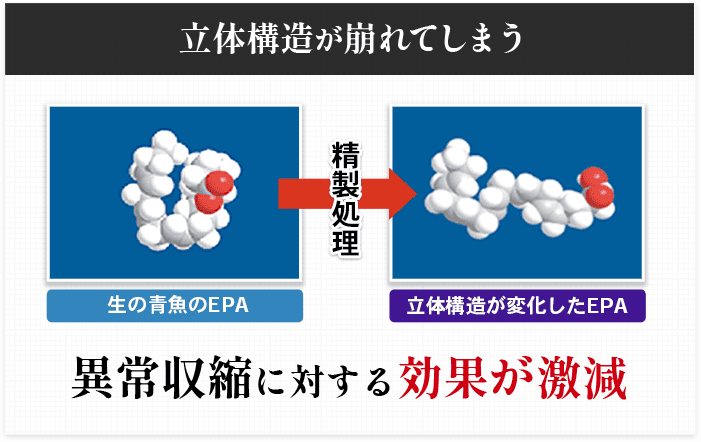
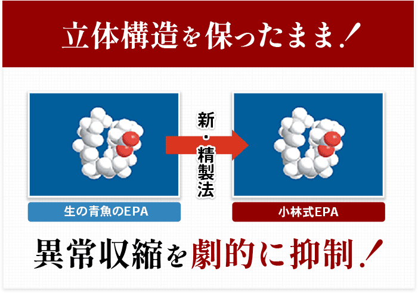
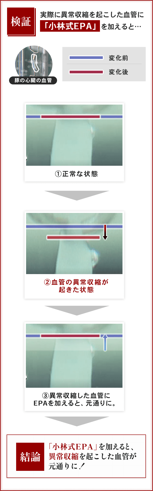

さまざまな病気や症状の原因
あなたも血管の異常収縮の可能性が？
いますぐセルフチェック
あなたの症状も血管の異常収縮が関わっているかもしれません。
「血管の異常収縮」セルフチェック
１つでも当てはまる症状の方は、
要注意です！
小さな異常収縮も、やがて大きな異常収縮となる可能性があります。今は大丈夫でも、心筋梗塞や狭心症を引き起こす可能性があるのです。
なにかあっては遅い。 そんな血管の異常収縮について紹介します。
※医師に診てもらうことをおすすめします。
血管の異常収縮を抑制する成分
「小林式EPA」とは？
効くEPAと効かないEPAがあった
実は、EPAなら何でもいいというわけではないことが研究結果として分かっています。
効くEPAとは、生の青魚そのものに含まれるEPA。ありとあらゆるEPAを取り寄せ実験をしたのですが、多くのEPAは精製のために熱などが加わり、生の青魚本来の立体構造が崩れてしまうのです。つまり、「血管の異常収縮」に対する効果が激減してしまうのです。

そこで誕生したのが「小林式EPA」です。
従来の精製方法を見直し、生の青魚の立体構造を保ったまま抽出することに成功しました。
※この研究で1つ目の特許取得
 「小林式EPA」が
食品成分であるメリット
薬は病気になった後にしか服用できないですよね。それに対して、小林式EPAは食品成分だから、事前の摂取が可能、つまり予防ができるのです。
継続的に小林式EPAを摂取することで突然の異常収縮を予防できるわけですね。
EPAがいろいろあるなんて初めて知りました！「小林式EPA」を見つけてくれて、私含め血管病に悩んできた世の方々にとって、本当に感謝すべき研究ですね。ありがたいです。
継続的に小林式EPAを摂取することで、突然襲い掛かる血管の異常収縮を未然に予防が大切です。ただ、プラスして注目してほしいことがあります。それはEPAの吸収です。
小林式EPAを効率よく吸収するには７つの成分が大事だったのです。これを次に説明しますね。
小林先生がおっしゃっている「小林式EPA」はどんなEPAなのですか？
ほかのEPAとどう違うのか教えてください。